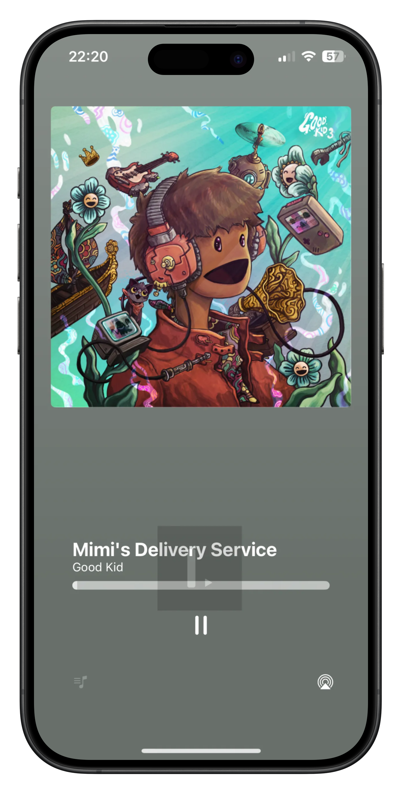

Artisticly
Create your new, decentrialized, song library and rediscover your music the way you always wanted.
I remember having the idea of making my own music streaming service, and I have partially done it! And YOU can run it yourself! This iOS app replicates the Apple Music app, but anyone could make an Artisticly app. This one is the official Artisticly app, fully integrated with the operating system.
- Server: lumaa-dev/ArtisticlyServer
- Client: lumaa-dev/ArtisticlyClient
